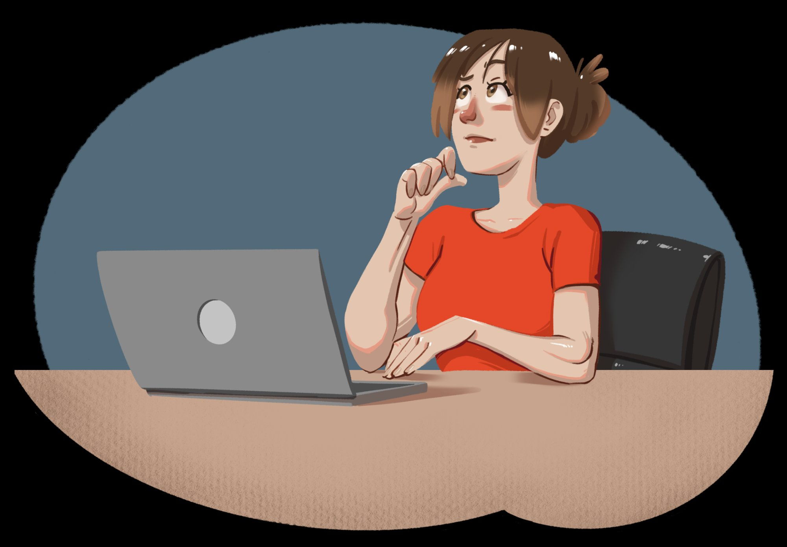
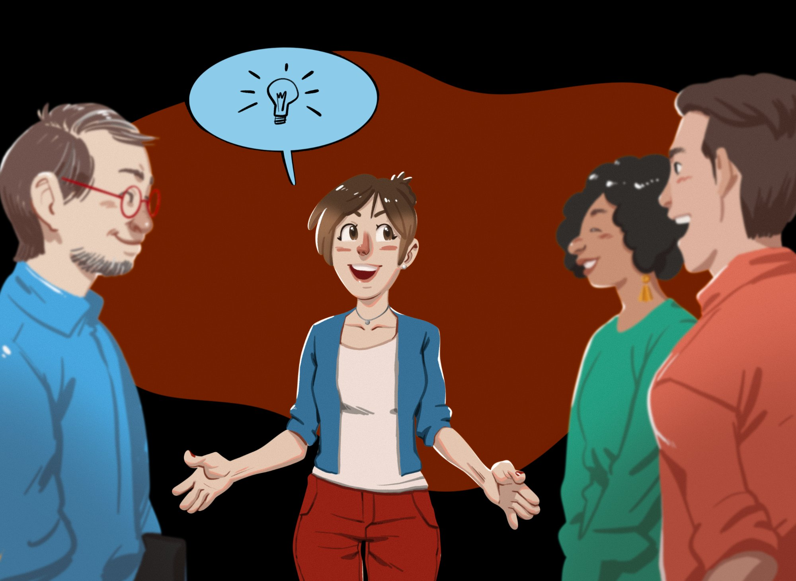
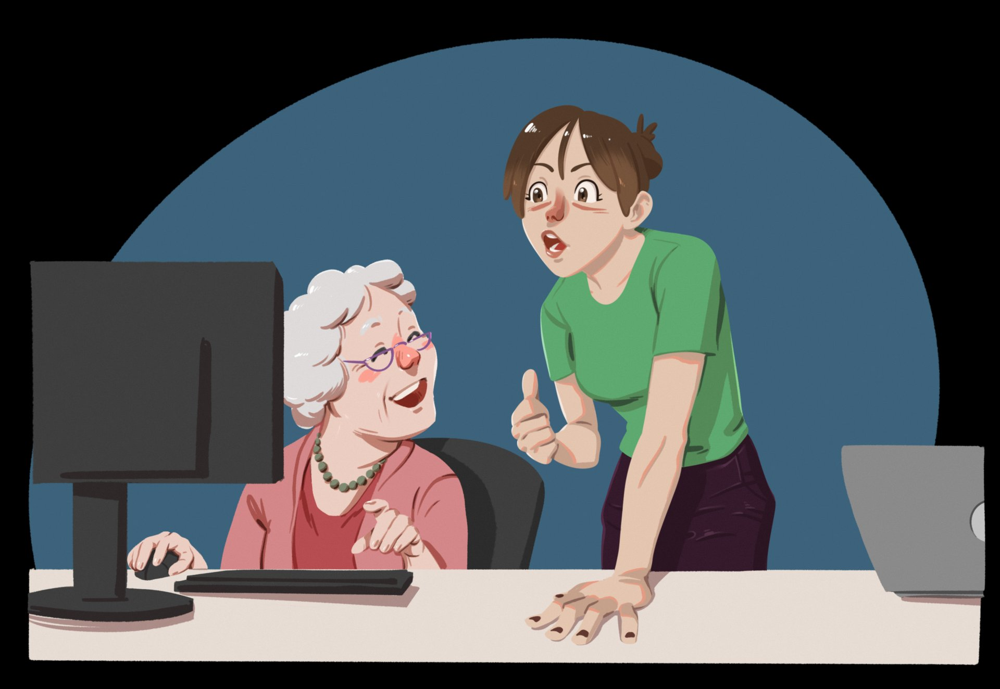

Design Instrucional · EAD · Metodologias Ativas
Reformulação completa da disciplina Didática na UNIVESP como projeto piloto, em resposta às novas diretrizes nacionais para licenciatura, integrando teoria, prática e conexão com a escola real.
Aproximar os futuros educadores da realidade das salas de aula, antes mesmo de pisar nelas.
Portaria CNE/CP nº 22/2023
As novas diretrizes curriculares nacionais para os cursos de licenciatura estabeleceram a necessidade urgente de superar a desarticulação histórica entre formação acadêmica e realidade prática do trabalho docente nas redes de ensino, com foco em métodos mais ativos, digitais e conectados às escolas de educação básica.
Conselho Nacional de Educação · 2023A UNIVESP elegeu a disciplina Didática como projeto piloto: um espaço de experimentação pedagógica onde novas abordagens pudessem ser testadas, avaliadas e replicadas em outras disciplinas e cursos.
A equipe formada para o projeto reuniu uma designer instrucional, equipe de TI, equipe de arte e programação, com um objetivo compartilhado: transformar a experiência educacional em algo mais dinâmico, aplicável e envolvente para os futuros professores.
A proposta era ir além das exigências regulatórias: explorar novas possibilidades pedagógicas que pudessem servir de modelo replicável dentro da universidade.
A escolha da Didática como disciplina piloto não foi acidental: é precisamente nela que os futuros professores aprendem a ensinar. Reformulá-la significava criar um exemplo vivo do que a própria disciplina pregava.
Gravar nas salas de aula, e não em estúdios, foi uma decisão pedagógica.
Os vídeos educativos foram produzidos na Escola Municipal Ângelo Bizzo. Professores e coordenadores foram filmados em atividade real: executando aulas, e depois explicando as metodologias que estavam usando. Os alunos da UNIVESP viam a teoria em ação: não como simulação, mas como realidade documentada.
Os vídeos foram projetados para ser curtos e focados. Imediatamente após cada vídeo, quizzes e atividades de fixação consolidavam o aprendizado no momento exato em que ele acontecia.
Escola Municipal Ângelo Bizzo · São PauloA cada semana, a professora introduzia os temas em vídeos curtos, estabelecendo vínculo pessoal com os alunos e delineando os objetivos de aprendizado.
Engajamento emocionalExercícios baseados em cenários práticos da personagem Marina, uma estagiária em escola pública enfrentando dilemas reais alinhados ao conteúdo da semana.
Storytelling · AplicaçãoGrupos de estudo produziam postagens coletivas para auxiliar a personagem Marina. Um formato que estimulou colaboração e simplificou a avaliação pelos facilitadores.
Colaboração · Escrita reflexivaRepositório de conhecimento construído coletivamente pelos alunos, reforçando conceitos e estimulando a colaboração horizontal na construção de saberes.
Construção coletivaSuperando as limitações do BlackBoard, os quizzes foram elaborados com feedbacks instantâneos, criando uma experiência engajadora de verificação do aprendizado.
Avaliação formativaMaterial de leitura criado para atender diferentes estilos de aprendizagem, resumindo os conceitos teóricos de cada semana de forma acessível e estruturada.
MultimodalidadeRecursos visuais desenvolvidos com o departamento de arte para descomplicar conceitos complexos, atendendo às múltiplas inteligências dos alunos.
Design visual · CogniçãoGuias detalhados para cada nova tecnologia introduzida, para que alunos e facilitadores pudessem usar as ferramentas com autonomia e confiança.
Autonomia digitalDisponibilizados ao final da disciplina, consolidaram os principais pontos de aprendizagem de forma clara e visualmente acessível para revisão e fixação.
Síntese de conteúdoEspaço dedicado com orientações sobre a condução das atividades e uso das ferramentas, garantindo suporte estruturado para a mediação do aprendizado.
Suporte pedagógico"Marina chegava toda semana com um novo desafio na escola. Os alunos precisavam ajudá-la e, ao fazer isso, aprendiam didática."
Estratégia central de storytelling · Didática UNIVESPMarina era uma personagem fictícia. Seus problemas eram reais. Toda semana ela enfrentava um dilema pedagógico diretamente relacionado ao conteúdo estudado pelos alunos: como lidar com turmas heterogêneas, como planejar uma aula inclusiva, como engajar estudantes desmotivados.
A tarefa dos alunos era reunir-se em grupos, discutir e publicar no blog coletivo uma orientação concreta para ajudá-la. O storytelling transformou o exercício teórico em algo que parecia urgente e humano.



A avaliação combinou questões fechadas (escala 1–5) com respostas abertas, coletadas anonimamente para garantir honestidade. Os resultados revelaram tendências consistentes sobre o que funcionou e o que precisava evoluir.
Marina não era um exercício. Era uma pessoa. Esse deslocamento narrativo transformou a relação dos alunos com o conteúdo, tornando abstrato em urgente.
O formato coletivo do blog funcionou bem quando bem orientado. O principal aprendizado: colaboração genuína exige instruções claras e ritos de participação definidos.
A combinação de vídeo, e-book, infográfico e quiz reconhece que estudantes aprendem de formas diferentes. Oferecer múltiplos caminhos é uma decisão de inclusão.
A Escola Municipal Ângelo Bizzo entregou autenticidade. Ver professores reais em ação e ouvir sua reflexão sobre a prática teve impacto que nenhum estúdio poderia replicar.
Ferramentas novas precisam vir acompanhadas de tutoriais e suporte contínuo. A demanda dos alunos por mais orientação revelou que tecnologia sem mediação pode gerar exclusão.
O objetivo desde o início era que a Didática servisse de referência. As metodologias documentadas e avaliadas aqui foram projetadas para ser transferíveis a outras disciplinas e cursos.
Síntese do projeto
Uma disciplina que ensina a ensinar. Ao ser reformulada, praticou exatamente o que pregava: aprendizado ativo, contextualizado e conectado à realidade.